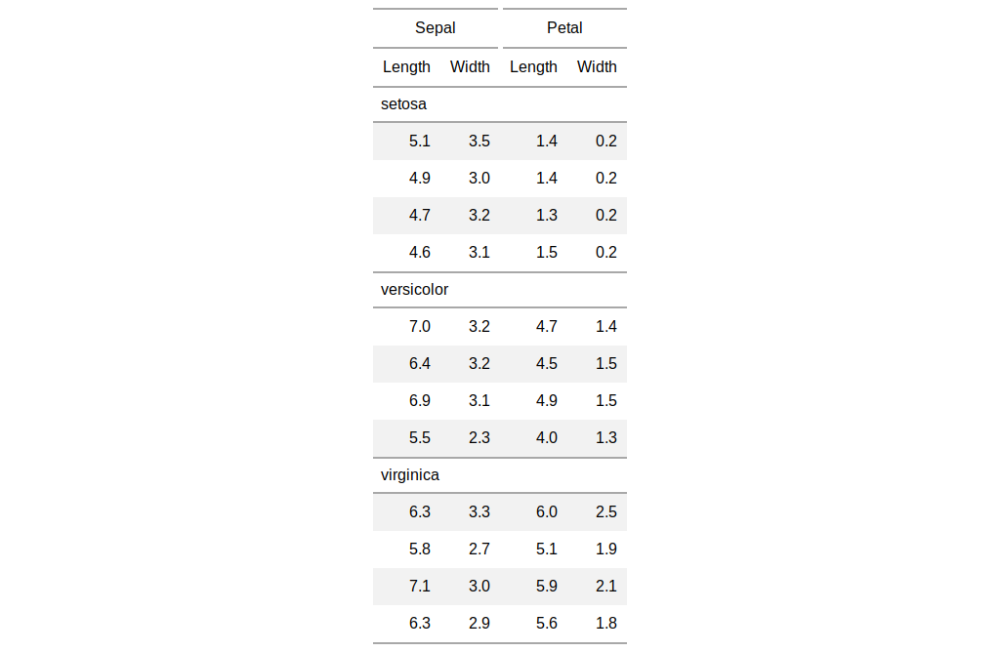

| cols_split_delim {gt} | R Documentation |
This function will split selected delimited column names such that the first components (LHS) are promoted to being spanner column labels, and the secondary components (RHS) will become the column labels. Please note that reference to individual columns must continue to be the column names from the input table data (which are unique by necessity).
cols_split_delim(data, delim, columns = NULL)
data |
a table object that is created using the |
delim |
the delimiter to use to split an input column name. The delimiter supplied will be autoescaped for the internal splitting procedure. The first component of the split will become the group name and the second component will be the column label. |
columns |
an optional vector of column names that this operation should be limited to. The default is to consider all columns in the table. |
If we look to the column names in the iris dataset as an example of
how cols_split_delim() might be useful, we find the names
Sepal.Length, Sepal.Width, Petal.Length,
Petal.Width. From this naming system, it's easy to see that the
Sepal and Petal can group together the repeated common
Length and Width values. In your own datasets, we can avoid a
lengthy relabeling with cols_label() if column names can be
fashioned beforehand to contain both the spanner column label and the column
label. An additional advantage is that the column names in the input table
data remain unique even though there may eventually be repeated column labels
in the rendered output table).
an object of class gt_tbl.

Other column modification functions: cols_align,
cols_hide, cols_label,
cols_merge_range,
cols_merge_uncert,
cols_merge, cols_move_to_end,
cols_move_to_start, cols_move
# Use `iris` to create a gt table; split # any columns that are dot-separated # between column spanner labels (first # part) and column labels (second part) tab_1 <- iris %>% dplyr::group_by(Species) %>% dplyr::slice(1:4) %>% gt() %>% cols_split_delim(delim = ".")